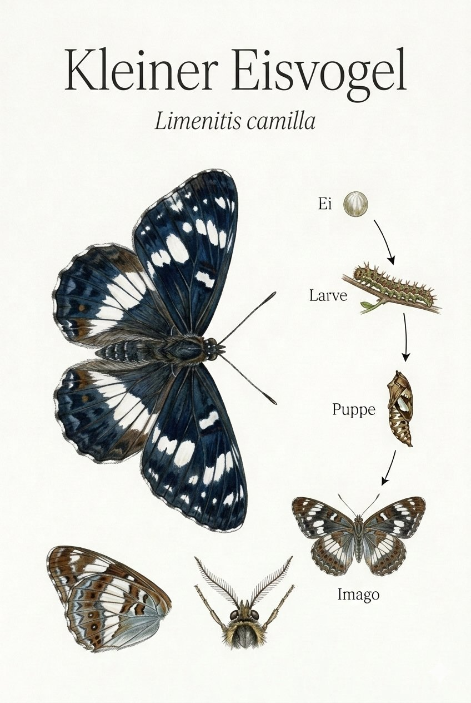

Insekten › Schmetterlinge › Tagfalter › Edelfalter

Limenitis camilla
Der Kleine Eisvogel ist einer der elegantesten Tagfalter unserer Wälder. Seine blauschwarzen Flügel mit dem breiten weißen Querband erinnern an das farbenprächtige Gefieder des gleichnamigen Vogels – daher der ungewöhnliche Name. Im Flug wechselt er in charakteristischen Bögen zwischen aktivem Flügelschlag und ausgedehnten Gleitphasen: Erst ein paar rasche Schläge, dann eine langgezogene Kurve mit ausgebreiteten Flügeln, wie ein kleiner Segler im Waldesdunkel.
Der Kleine Eisvogel ist treu: Seine Raupen fressen fast ausschließlich an Geißblatt (Lonicera). Wo diese Kletterpflanze an Waldrändern und in lichten Gebüschen wächst, ist der Eisvogel zu Hause. Die kleine Raupe überwintert in einem selbst gesponnenen Röhrchen aus einem zusammengerollten Geißblattblatt – ein winziges Kunstwerk, das kaum aufzuspüren ist, aber die raue Jahreszeit übersteht.
Der Kleine Eisvogel ist kein Wanderfalter. Wer ihn einmal an einem Waldweg beobachtet hat, kann ihn dort Jahr für Jahr wiederfinden – sofern das Geißblatt bleibt. Er ist ein treuer Zeiger für strukturreiche Laubwälder mit einem offenen Wegenetz. Dichter Wirtschaftsforst und ausgeräumte Waldränder lassen ihn verschwinden. Im Ebsdorfergrund findet er an einigen Stellen noch seinen Lebensraum.
Texte und Bilder aus der Broschüre „Schmetterlinge im Ebsdorfergrund“ (Michael Baur), 1:1 übernommen · Fotos CC BY-NC, Illustrationen im Stil klassischer Lehrtafeln. Die Artseite ist der gemeinsame Endpunkt von Bestimmungsschlüssel und Stammbaum.